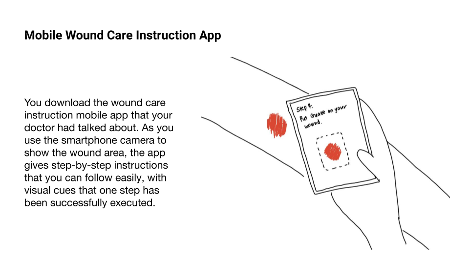
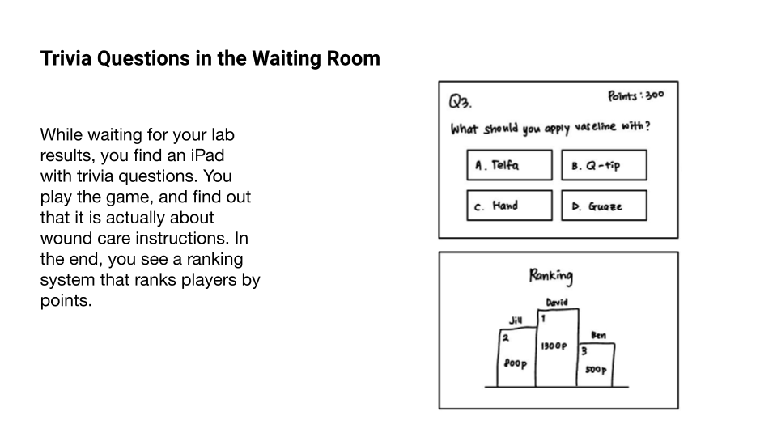
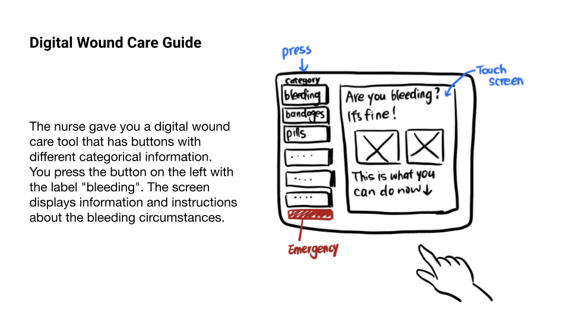
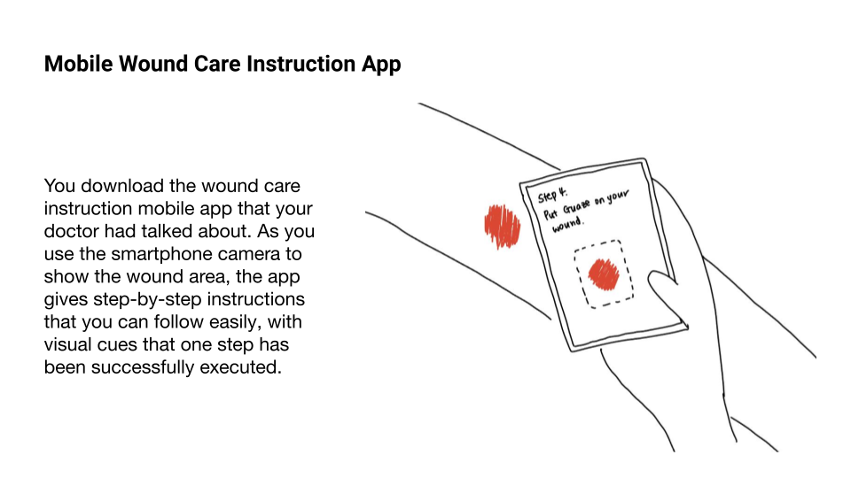
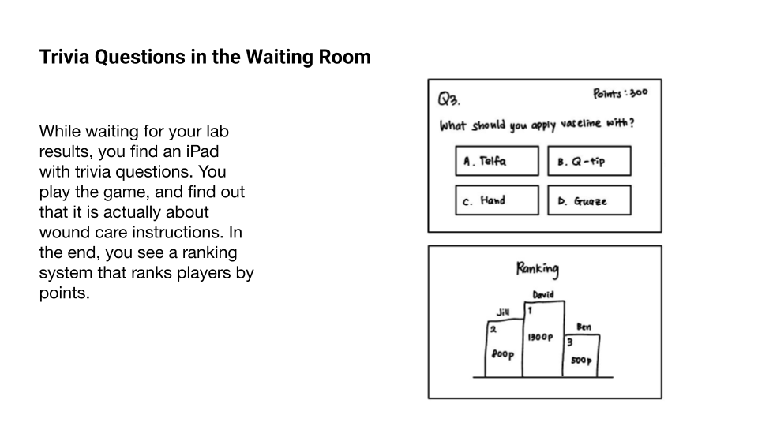
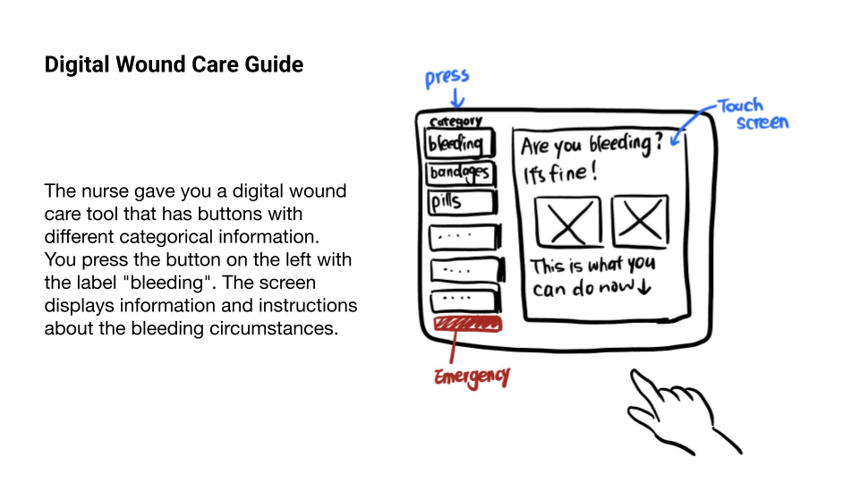

Working alongside University Hospitals in Cleveland, our group of Masters in Human-Computer Interaction students worked for four months to navigate secondary, primary, exploratory, generative, and evaluative research to redefine our problem space and offer valuable insights.
01
Before we dive into the gist of what we did and what we learned, we wish to take you on a ride to the journey of a typical patient with a surgical wound from a Mohs surgery.
Mohs surgery↗ is one of the most common treatments for high-risk skin cancers. It involves cutting away thin layers of skin until there are no signs of cancer left. Following surgery, careful treatment is required to minimize the risk of infection and avoid other problems.
02
As we continued to analyze and synthesize the data we had collected over the course of the semester it became clear that we were faced with a different problem than we had originally set out to solve: the patient’s inability to deal with unexpected situations, and the lack of easily accessible, personalized information, are the main causes of poor surgical outcomes and healthcare providers’ burden.
the patient’s inability to deal with unexpected situations
the lack of easily accessible, personalized information
We understand our problem, and we know what the benefits will look like for our different stakeholders, so what questions do we have to guide our research as we move into the summer semester? Our team developed 2 ‘how might we’ questions that we believe, at this stage of our research, address the essence of our project:
How might we help patients to put more trust and attention towards the wound-care material?

How might we ensure patients receive immediate answers and reassurance while reducing the workload for nurses?
We didn’t just pull these guiding questions out of thin air, so to better understand how we got here we will get into our three key insights.
03
To answer these questions, we conducted a comprehensive research series that help us step into the world of wound care. Most excitingly, we began with a one-week empathy study to put ourselves in patients' shoes and become familiar with general wound care procedures. We also conducted site visits where we interacted with patients and healthcare providers in clinical settings to identify various touch points in this journey. Additionally, we interviewed both healthcare providers and patients to uncover pain points from both perspectives, and with speed dating sessions we showcased our ideas to explore hidden needs and potential design directions worth pursuing.
1-week
Empathy Study
6
Patient Interviews
& Site Visit
9
Expert Interviews
9
Speed Dating
& Interviews
04
01
The current wound care procedure doesn’t feel personalized beyond the clinic.
INTERVIEW
Nurses disclosed that they primarily use the wound care instruction sheet as a reference point, often tailoring the delivery of wound-care instructions based on various patient factors, including age, personality, cognitive ability, wound location, and prior experiences with wound care. They adjust aspects such as pacing, content coverage, and repetition frequency accordingly.
SITE VISIT
When back at home, patients are left to adapt generic instructions without professional guidance, relying on intuition and assumptions that are not always correct.
LITERATURE
REVIEW
Personalized care has been shown to improve patient satisfaction and outcomes. Extending personalization post-discharge, considering each patient's cognitive, health and technology literacy, and providing personalized instructional materials, whether in print or in the form of mobile-accessible content, can enhance patient confidence and treatment success.
To truly enhance wound care outcomes, it is important to extend personalization beyond the clinic setting by anticipating patients' needs during the immediate post-discharge period.
By proactively addressing these factors, patients will be more confident navigating their post-discharge care, ultimately improving outcomes and satisfaction with the wound care experience.
02
Although patients show high confidence for at-home wound care, they are unprepared when unexpected situations arise.
SITE VISIT
At the clinic, when asked about their level of confidence in their ability to perform wound care at home, 100% of the patients gave themselves a perfect score of 5 out of 5.
INTERVIEW
The current procedure focuses on instilling confidence in patients before they leave the clinic. In practice this often means focusing on the main instructions patients will need to follow and not spending much time discussing possible complications and what to do when such complications arise. As one nurse shared, “I personally will only go over the first page of the instruction sheet. Most the information is on it, including what to do within the first week after surgery.”
OBSERVATION
As we delved into the call log data, we discovered that a significant (42%) percentage of the calls were related to complications, ranging from concerns about wound reopening to symptoms like itching and the appearance of white spots.
Accordingly, rather than focusing primarly on making patients feel confident, we also want them to also appreciate that uncertainty is a natural part of the wound healing process. We want them to understand that potential complications may arise and prepare them to deal with them if they arise. By better preparing them, we aim to reduce anxiety and empower them to more effectively navigate challenges should they arise during their recovery journey.
03
Patients seek constant reassurance from direct conversations with trusted healthcare providers.
INTERVIEW
During interviews with subject-matter experts, 7 out of 9 people highlighted the importance of reassurance in patient interactions. One nurse mentioned, “It’s important to reassure them because people might easily forget or feel nervous.” Similarly, another nurse said, “I always encourage patients, especially those living alone with challenging wound locations, to call me for feedback, reassurance, or further counseling.”
SPEED
DATING
The literature indicates that patients are reassured when they know that nurses are nearby or easy to reach. At the Cleveland Clinic, phone calls are the primary way patients seek reassurance. In speed dating sessions, 14 out of 16 patients said they would first call nurses or doctors if they encountered problems. Many patients expressed discomfort with chatbots or mobile apps, preferring direct interaction with medical personnel.
SPEED
DATING
Patients rely on calls due to their trust in healthcare providers' expertise. Patient 1 said, “If they tell me I can shower, I shower.” Patient 8 echoed this sentiment, “The doctor knows me, so I’d trust him. Right now, he is the expert.”
Our solution aims to balance the need for patients to be reassured without imposing unnecessary burden on medical personnel. It does so by providing patients with more relevant, personalized instructions, including information about potential complications and how to deal with them. This includes instructions for when to seek help from medical personnel. In addition, we also introduce a proposal for a chatbot solution for those patients who are comfortable using such technology. The chatbot would need to be thoroughly vetted and include appropriate guardrails to ensure it can safely be deployed in such a context.


 




